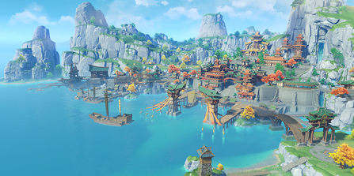

劇情
蒙德
旅行者來到風神的領地——自由的國度「蒙德」，恰巧遇到風魔龍特瓦林在
深淵教團的蠱惑下想要毀滅蒙德，旅行者與溫迪、西風騎士團代理團長琴
、迪盧克等人最終拯救了特瓦林，化解了這次危機，同時得知溫迪的真實
身分是蒙德的統治者風之神巴巴托斯，但返回途中愚人眾的執行官「女士
」突然出現奪走了溫迪的「神之心」
璃月
旅行者在溫迪的建議下前往契約之國璃月尋找岩王帝君，岩王帝君卻化身鍾離
在璃月製造自己的假死事件，遭懷疑的旅行者於是前往絕雲間尋找三眼五顯仙
人尋求公道，結果使仙人與代理執政的璃月七星衝突升級，愚人眾執行官「公子」
趁機召喚出了被封印的魔神奧賽爾突然襲擊璃月港，旅行者在與璃月七星和仙人
的幫助下與奧賽爾作戰，最終凝光將其懸浮在空中的住所「群玉閣」砸下，再次
封印了奧賽爾
稻妻
旅行者經由船長北斗搭乘往來璃月與稻妻的南十字船隊並突破雷暴
抵達追求永恆的雷之國稻妻，希望見到統治者雷電將軍，卻得知幕
府正在推行「眼狩令」，旅行者突襲救下因持有「神之眼」而被逮
捕的托馬並在被雷電將軍打敗後與托馬共同逃離，接著前往稻妻的
反抗軍營地，通過八重神子的鍛鍊和神里家的支援，旅行者在御前
決鬥中成功戰勝了在稻妻策劃陰謀的「女士」，導致「女士」死於
雷電將軍的刀下，接著在反抗軍的配合下與雷電將軍的真身「影」交
手，成功獲勝並說服她廢除眼狩令，最後卻得知「神之心」已被愚人眾
執行官「散兵」帶走
須彌
旅行者前往智慧型之國須彌尋找小吉祥草王，卻誤入了實際統治須彌的教
令院在須彌城進行的陰謀，陷入了夢境中無限循環，最終與草神等人一同
打破迴圈，將須彌民眾從夢境中解放出來，接著旅行者與眾人深入沙漠，
制定反攻計畫，同時在赤王陵中揭開了草神、花神和赤王的歷史，讓沙漠
子民不再仇視象徵森林的大慈樹王，同時教令院「造神」的陰謀也浮出水
面，旅行者與眾人最後挫敗了教令院與愚人眾的陰謀，被教令院監禁多年
的草神納西妲重掌須彌實際統治權。其後，納西妲用神之心與博士交換了
被世界樹隱藏的秘密資訊，告訴旅行者他是提瓦特的「第四降臨者」，血
親則是在某個時候突然出現在坎瑞亞，並且世界樹中記載血親是提瓦特人
，並提到下一個國度「楓丹」